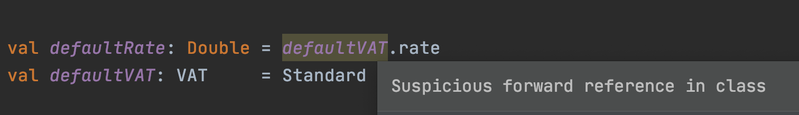
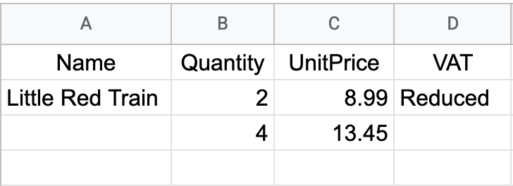

background-image: url(../img/fp-tower/website-background.svg) class: center, middle, white .title[null] --- # Scala Functional Subset <br><br> .center[ # .light-green[FP functions everywhere] # .light-green[AND] # .light-green[Two additional requirements] ] --- class: medium-code # Null is valid reference .seventy-two-left[ ```scala case class Item(name: String, quantity: Int, unitPrice: Double, vat: VAT) sealed abstract class VAT(val rate: Double) case object Reduced extends VAT(1.05) case object Standard extends VAT(1.20) ``` ] --- class: medium-code # Null is valid reference .seventy-two-left[ ```scala case class Item(name: String, quantity: Int, unitPrice: Double, vat: VAT) sealed abstract class VAT(val rate: Double) case object Reduced extends VAT(1.05) case object Standard extends VAT(1.20) val book : Item = Item("Little Red Train", 2, 8.99, Reduced) val unknown: Item = Item(null , 4, 13.45, null ) ``` ] --- class: medium-code # Null is valid reference .seventy-two-left[ ```scala case class Item(name: `String`, quantity: Int, unitPrice: Double, vat: `VAT`) sealed abstract class VAT(val rate: Double) case object Reduced extends VAT(1.05) case object Standard extends VAT(1.20) val book : Item = Item("Little Red Train", 2, 8.99, Reduced) val unknown: Item = Item(`null` , 4, 13.45, `null` ) ``` ] --- class: medium-code # Null is valid reference .seventy-two-left[ ```scala case class Item(name: String, quantity: Int, unitPrice: Double, vat: VAT) sealed abstract class VAT(val rate: Double) case object Reduced extends VAT(1.05) case object Standard extends VAT(1.20) val book : Item = Item("Little Red Train", 2, 8.99, Reduced) val unknown: Item = Item(null , 4, 13.45, null ) val other : Item = `null` ``` ] --- class: medium-code # Null is valid reference but not a primitive .seventy-seven-left[ ```scala case class Item(name: String, quantity: Int, unitPrice: Double, vat: VAT) sealed abstract class VAT(val rate: Double) case object Reduced extends VAT(1.05) case object Standard extends VAT(1.20) val book : Item = Item("Little Red Train", 2, 8.99, Reduced) val unknown: Item = Item(null , 4, 13.45, null ) val other : Item = null ``` ```scala val toy : Item = Item("Puzzle 40 Pcs", `null`, `null`, Standard) // error: an expression of type Null is ineligible for implicit conversion // val toy: Item = Item("Puzzle 40 Pcs", null, null, Standard) // ^^^^ ^^^^ ``` ] --- class: medium-code # Null causes exceptions .seventy-seven-left[ ```scala case class Item(name: String, quantity: Int, unitPrice: Double, vat: VAT) sealed abstract class VAT(val rate: Double) case object Reduced extends VAT(1.05) case object Standard extends VAT(1.20) val book : Item = Item("Little Red Train", 2, 8.99, Reduced) val unknown: Item = Item(null , 4, 13.45, null ) def totalPrice(item: Item): Double = item.unitPrice * item.quantity * item.vat.rate ``` ] .thirty-seven-left[ ```scala totalPrice(book) // res: Double = 18.879 ``` ] --- class: medium-code # Null causes exceptions .seventy-seven-left[ ```scala case class Item(name: String, quantity: Int, unitPrice: Double, vat: VAT) sealed abstract class VAT(val rate: Double) case object Reduced extends VAT(1.05) case object Standard extends VAT(1.20) val book : Item = Item("Little Red Train", 2, 8.99, Reduced) val unknown: Item = Item(null , 4, 13.45, `null` ) def totalPrice(item: Item): Double = item.unitPrice * item.quantity * item.`vat.rate` ``` ] .thirty-seven-left[ ```scala totalPrice(book) // res: Double = 18.879 ``` ] .three-left[ ] .thirty-seven-left[ ```scala totalPrice(unknown) // java.lang.NullPointerException ``` ] --- class: medium-code # Null causes exceptions .seventy-seven-left[ ```scala case class Item(name: String, quantity: Int, unitPrice: Double, vat: VAT) sealed abstract class VAT(val rate: Double) case object Reduced extends VAT(1.05) case object Standard extends VAT(1.20) val book : Item = Item("Little Red Train", 2, 8.99, Reduced) val unknown: Item = Item(null , 4, 13.45, null ) def totalPrice(item: Item): Double = `item.unitPrice` * `item.quantity` * `item.vat`.rate ``` ] .thirty-seven-left[ ```scala totalPrice(book) // res: Double = 18.879 ``` ] .three-left[ ] .thirty-seven-left[ ```scala totalPrice(unknown) // java.lang.NullPointerException totalPrice(`null`) // java.lang.NullPointerException ``` ] --- class: medium-code # Null handling .seventy-seven-left[ ```scala case class Item(name: String, quantity: Int, unitPrice: Double, vat: VAT) sealed abstract class VAT(val rate: Double) case object Reduced extends VAT(1.05) case object Standard extends VAT(1.20) val book : Item = Item("Little Red Train", 2, 8.99, Reduced) val unknown: Item = Item(null , 4, 13.45, null ) def totalPrice(item: Item): Double = if(`item == null`) 0.0 else if (`item.vat == null`) item.quantity * item.unitPrice else item.quantity * item.unitPrice * item.vat.rate ``` ] .thirty-seven-left[ ```scala totalPrice(book) // res: Double = 18.879 ``` ] .three-left[ ] .thirty-seven-left[ ```scala totalPrice(unknown) // res: Double = 53.8 totalPrice(null) // res: Double = 0.0 ``` ] --- class: medium-code # Null handling .seventy-seven-left[ ```scala case class Item(name: String, quantity: Int, unitPrice: Double, vat: VAT) sealed abstract class VAT(val rate: Double) case object Reduced extends VAT(1.05) case object Standard extends VAT(1.20) val book : Item = Item("Little Red Train", 2, 8.99, Reduced) val unknown: Item = Item(null , 4, 13.45, null ) def totalPrice(item: Item): Double = if(item == null) 0.0 else if (item.vat == null) item.quantity * item.unitPrice else item.quantity * item.unitPrice * item.vat.rate ``` ] .thirty-seven-left[ ```scala totalPrice(book) // res: Double = 18.879 ``` ] .three-left[ ] .thirty-seven-left[ ```scala totalPrice(unknown) // res: Double = `53.8` totalPrice(null) // res: Double = `0.0` ``` ] --- # Ignore Null <br> ## 1. Don't write functions that return null ## 2. Don't assign null to variables ## 3. Don't check for null --- # Forward reference .forty-two-left[ ```scala val defaultRate = defaultVAT.rate // java.lang.NullPointerException val defaultVAT = Standard ``` ] -- <br><br><br><br><br><br><br> .twelve-left[.center[ ## Compiler <br> ## IDE ]] .seventy-seven-right[ ```scala // warning: Reference to uninitialized value defaultVAT // val defaultRate = defaultVAT.rate // ^^^^^^^^^^ ```  ] --- # Option is a better null .fifty-two-left[ ```scala case class User( name : String, age : Int, email: `Option`[String], ) ``` ] -- .forty-two-right[ ```sql CREATE TABLE users ( name TEXT `NOT NULL`, age INT `NOT NULL`, email TEXT ) ``` ] --- # Option is a better null .fifty-two-left[ ```scala case class User( name : String, age : Int, email: Option[String], ) ``` ] .fifty-two-left[ ```scala def vatRate(optVat: Option[VAT]): Double = optVat match { case None => 1.0 case Some(vat) => vat.rate } ``` ] --- # Option is a better null .fifty-two-left[ ```scala case class User( name : String, age : Int, email: Option[String], ) ``` ] .forty-two-right[ ```scala List(1,2,3,4).find(_ > 2) // res3: Option[Int] = Some(3) List(1,2,3,4).find(_ > 10) // res4: Option[Int] = None ``` ] .fifty-two-left[ ```scala def vatRate(optVat: Option[VAT]): Double = optVat match { case None => 1.0 case Some(vat) => vat.rate } ``` ] --- # Exception 1: Interface with Java code .fifty-seven-left[ ```scala import org.apache.poi.ss.usermodel.{Cell, Row} val row: Row = ... row.getCell(0) // res: Cell = Little Red Train row.getCell(1) // res: Cell = 2 row.getCell(3) // res: Cell = null ``` ] .thirty-seven-right[ <br>  ] --- # Exception 1: Interface with Java code .fifty-seven-left[ ```scala import org.apache.poi.ss.usermodel.{Cell, Row} val row: Row = ... row.getCell(`0`) // res: Cell = `Little Red Train` row.getCell(1) // res: Cell = 2 row.getCell(3) // res: Cell = null ``` ] .thirty-seven-right[ <br> ] --- # Exception 1: Interface with Java code .fifty-seven-left[ ```scala import org.apache.poi.ss.usermodel.{Cell, Row} val row: Row = ... row.getCell(0) // res: Cell = Little Red Train row.getCell(`1`) // res: Cell = `2` row.getCell(3) // res: Cell = null ``` ] .thirty-seven-right[ <br> ] --- # Exception 1: Interface with Java code .fifty-seven-left[ ```scala import org.apache.poi.ss.usermodel.{Cell, Row} val row: Row = ... row.getCell(0) // res: Cell = Little Red Train row.getCell(1) // res: Cell = 2 row.getCell(`3`) // res: Cell = `null` ``` ] .thirty-seven-right[ <br> ] --- # Option constructor .fifty-seven-left[ ```scala import org.apache.poi.ss.usermodel.{Cell, Row} val row: Row = ... Option(row.getCell(0)) // res: Option[Cell] = `Some(Little Red Train)` Option(row.getCell(1)) // res: Option[Cell] = Some(2) Option(row.getCell(3)) // res: Option[Cell] = `None` ``` ```scala object Option { def apply[A](value: A): Option[A] = if (`value == null`) None else Some(value) } ``` ] .thirty-seven-right[ <br> ] --- class: medium-code # Scala wrapper .sixty-two-left[ ```scala import org.apache.poi.ss.usermodel.{Cell, Row} case class SafeRow(row: Row) { def getDouble(column: Int): Option[Double] = if (row == null) None else { val cell = row.getCell(column) if (cell == null || cell.getCellType() != Cell.NUMERIC) None else Some(cell.getNumericCellValue()) } } ``` ] .thirty-four-right[ ```scala val row: SafeRow = ... row.getDouble(0) // res: Option[Double] = None row.getDouble(1) // res: Option[Double] = Some(2) Option(row.getCell(3)) // res: Option[Double] = None ``` ] --- class: medium-code # Scala wrapper .sixty-two-left[ ```scala import org.apache.poi.ss.usermodel.{Cell, Row} case class SafeRow(row: Row) { def getDouble(column: Int): Option[Double] = if (`row == null`) None else { val cell = row.getCell(column) if (`cell == null` || `cell.getCellType() != Cell.NUMERIC`) None else Some(cell.getNumericCellValue()) } } ``` ] .thirty-four-right[ ```scala val row: SafeRow = ... row.getDouble(0) // res: Option[Double] = None row.getDouble(1) // res: Option[Double] = Some(2) Option(row.getCell(3)) // res: Option[Double] = None ``` ] --- # Exception 2: Low level code .sixty-two-left[ ```scala if (hasUnboxed) { popNextBind(bFirst, bRest) match { case null => cb(Right(unboxed)) return case bind => val fa = try bind(unboxed) catch { case NonFatal(ex) => RaiseError(ex) } hasUnboxed = false unboxed = null bFirst = null currentIO = fa } } ``` .medium[.center[from cats-effect library]] ] --- class: white background-image: url(../img/fp-tower/website-background.svg) # .white[Summary] <br> ## .white[Ignore null: don't use it, don't handle it] ## .white[Use Option instead] ## .white[ Exception 1: interfacing with Java code] ## .white[ Exception 2: high-performance] --- # Explicit Nulls in Scala 3 .forty-seven-left[ ```scala scalacOptions += "-Yexplicit-nulls" ``` <br> ```scala val item: Item = null // error // Found: Null // Required: Item ``` ] -- <br><br><br><br><br><br><br><br><br><br><br> .seventy-seven-left[ ```scala val item: `Item | Null` = null val book: `Item | Null` = Item("Little Red Train", 2, 8.99, Reduced) ``` ]